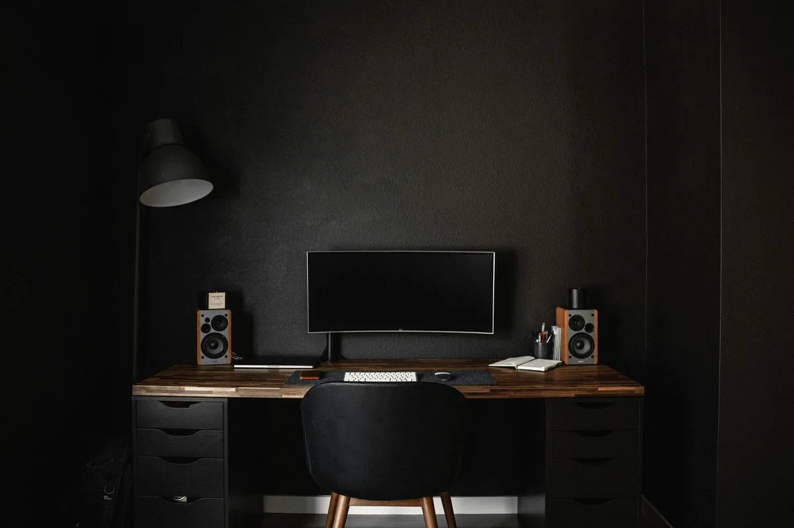
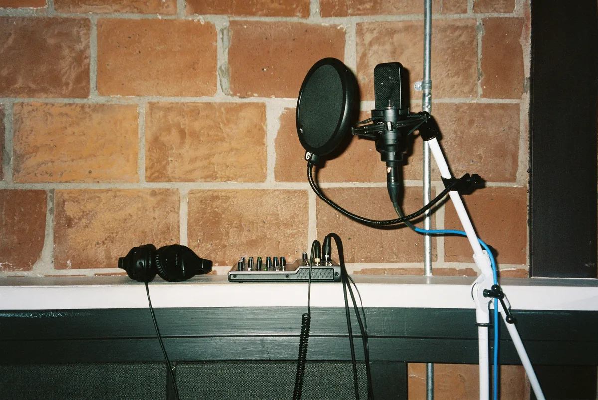

Jak zmiksować wokal w domu, żeby brzmiał czysto i profesjonalnie? Klucz to nie jedna magiczna wtyczka, tylko właściwa kolejność kilku prostych narzędzi ustawionych z głową. W tym poradniku rozkładam typowy łańcuch wtyczek na wokalu na czynniki pierwsze - od porządkowania ścieżki po automatyzację głośności - tak, żebyś mógł powtórzyć go na własnym nagraniu.
Zacznij od uporządkowanej ścieżki
Miks zaczyna się zanim włączysz pierwszą wtyczkę. Przesłuchaj nagranie i posprzątaj je: wytnij lub ścisz przeszkadzające oddechy, usuń trzaski, wyrównaj oczywiste skoki głośności i sklej najlepsze frazy z dostępnych dubli. Im czystszy materiał wejściowy, tym mniej pracy zostanie dla efektów.
Jeśli nagranie ma dużo szumu tła lub pogłosu z pokoju, żadna wtyczka nie zrobi z niego studia. Warto wtedy najpierw poprawić sam sposób nagrywania wokalu.
Kolejność wtyczek na wokalu
Kolejność na ścieżce ma znaczenie, bo każda wtyczka pracuje na sygnale przetworzonym przez poprzednią. Sprawdzony, uniwersalny łańcuch wygląda tak:

- Filtr górnoprzepustowy i korekta problemów (EQ czyszczący).
- Kompresor kontrolujący dynamikę.
- De-esser ujarzmiający sybilanty.
- EQ kształtujący barwę (podbicia).
- Efekty przestrzenne: reverb i delay (najczęściej na osobnych szynach).
To punkt wyjścia, nie sztywna reguła - z czasem będziesz go modyfikować pod konkretny głos.
EQ - odejmij, zanim dodasz
Pierwszy EQ ma sprzątać, a nie upiększać. Odetnij dół filtrem górnoprzepustowym w okolicy 80-100 Hz, poszukaj i obniż pasma, które brzmią pudełkowo lub nosowo (zwykle 200-500 Hz). Dopiero późniejszy EQ, po kompresji, służy do delikatnego podbicia góry dla wyrazistości.
Kompresja - jeden czy dwa kompresory
Jeden kompresor z redukcją kilku dB w zupełności wystarczy na początek. Bardziej zaawansowana technika to kompresja szeregowa - dwa kompresory ustawione łagodnie, każdy redukujący sygnał odrobinę. Rozkłada to pracę na dwa etapy i brzmi bardziej naturalnie niż jeden mocno dociśnięty kompresor. Jeśli dopiero zaczynasz, zostań przy jednym i naucz się słyszeć, co robi.
De-esser - ujarzmienie sybilantów
Po kompresji i podbiciu góry syczące głoski potrafią kłuć w uszy. De-esser reaguje tylko na pasmo sybilantów (zwykle 5-8 kHz) i przycisza je w momencie, gdy się pojawią. Ustaw go tak, żeby zniknęło kłucie, ale głos nie zaczął brzmieć jak przez chusteczkę.
Reverb i delay - osadzenie w miksie
Efekty przestrzenne najlepiej trzymać na osobnych szynach (aux/send), a nie bezpośrednio na ścieżce - wtedy łatwo sterujesz ich ilością i używasz tego samego pogłosu na kilku ścieżkach. Krótki pogłos daje naturalność, delay pogrubia i buduje głębię. Dawkuj oszczędnie: suchy, obecny wokal prawie zawsze brzmi lepiej niż zatopiony w pogłosie.
Automatyzacja głośności - sekret równego wokalu
Nawet po kompresji część słów będzie za cicha lub za głośna. Profesjonalny efekt daje automatyzacja - ręczne dorysowanie głośności fraza po frazie, tak aby cały wokal był równy i zrozumiały. To żmudne, ale to właśnie ta praca odróżnia amatorski miks od dopracowanego. Zrób ją na końcu, gdy reszta łańcucha jest już ustawiona.

Najczęstsze pytania (FAQ)
W jakiej kolejności ustawić wtyczki na wokalu?
Typowo: EQ czyszczący, kompresor, de-esser, EQ kształtujący, na końcu reverb i delay na osobnych szynach. To dobry punkt wyjścia dla większości głosów.
Ile kompresji dać na wokal?
Na start celuj w redukcję kilku dB przy stopniu 3:1 do 4:1. Jeśli wokal traci naturalność, zmniejsz ustawienia.
Czy reverb dawać bezpośrednio na ścieżkę wokalu?
Lepiej na osobną szynę (send). Łatwiej wtedy sterować ilością efektu i używać tego samego pogłosu na kilku ścieżkach.
Czym jest automatyzacja głośności wokalu?
To ręczne wyrównanie głośności poszczególnych fraz, aby cały wokal był równy i zrozumiały. To jeden z najważniejszych kroków w dopracowanym miksie.
Czy da się dobrze zmiksować wokal w domu?
Tak. Wystarczy DAW, przyzwoity odsłuch i podstawowe wtyczki. Najważniejsze są czyste nagranie i umiar w ustawieniach.